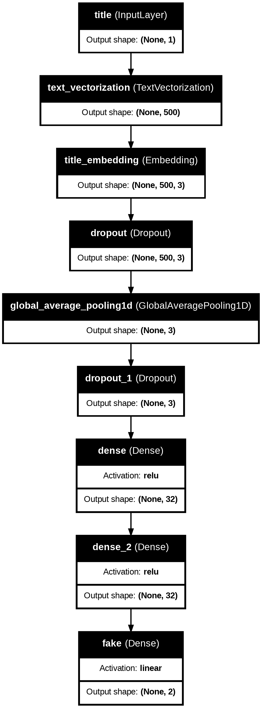

# Set the default Plotly renderer to "iframe"
import plotly.io as pio
pio.renderers.default = "iframe"Table of Contents
1. Introduction
2. Data Acquisition
3. Data Preparation
4. Model Creation: Model1 (using Title), Model2 (using Text), Model3 (using Title + Text)
5. Model Training
6. Model Evaluation
7. Embeding Visualization
1. Introduction
In today’s digital age, the spread of misinformation and fake news has become a major concern. With the vast amount of information available online, it has become increasingly challenging to distinguish between credible sources and those that peddle falsehoods. This problem has far-reaching consequences, from swaying public opinion to influencing political outcomes.
To combat this issue, researchers and data scientists have been exploring various techniques to automate the detection of fake news. One promising approach involves the use of deep learning, a subfield of machine learning that has proven remarkably effective in tasks such as image recognition, natural language processing, and predictive modeling.
In this blog post, we’ll explore the application of deep learning, specifically using the Keras library, to build models capable of identifying fake news articles. We’ll be implementing three different models, each leveraging different aspects of the news article:
Model 1 (Using Title): This model will focus solely on the title of the news article, aiming to capture any potential signals or patterns that might indicate whether the content is legitimate or fabricated.
Model 2 (Using Text): In contrast, this model will analyze the body text of the news article, taking into account the writing style, word choice, and overall content to make its prediction.
Model 3 (Using Title + Text): The third model will combine the strengths of the previous two, incorporating both the title and the body text to make a more informed decision about the veracity of the news article.
By comparing the performance of these three models, we’ll gain insights into the relative importance of different components of a news article in determining its credibility. Additionally, we’ll explore techniques for optimizing these models, such as data preprocessing, feature engineering, and hyperparameter tuning.
Fake news detection is a complex and multifaceted challenge, but the application of deep learning techniques holds great promise in tackling this issue. Join us as we delve into the world of deep learning and explore its potential in combating the spread of misinformation.
# Import pakeages
import numpy as np
import pandas as pd
import tensorflow as tf
import re
import string
from keras import layers
from keras import losses
import keras
from keras.layers import TextVectorization
from matplotlib import pyplot as plt
# for embedding viz
import plotly.express as px
import plotly.io as pio
pio.templates.default = "plotly_white"import os
os.environ["KERAS_BACKEND"] = "tensorflow"2. Data Acquisition
Our data for this assignment comes from the article
Ahmed H, Traore I, Saad S. (2017) “Detection of Online Fake News Using N-Gram Analysis and Machine Learning Techniques. In: Traore I., Woungang I., Awad A. (eds) Intelligent, Secure, and Dependable Systems in Distributed and Cloud Environments. ISDDC 2017. Lecture Notes in Computer Science, vol 10618. Springer, Cham (pp. 127-138).
train_url = "https://github.com/PhilChodrow/PIC16b/blob/master/datasets/fake_news_train.csv?raw=true"The dataset hosted a training data set at the below URL. You can either read it into Python directly (via pd.read_csv()) or download it to your computer and read it from disk. This would be our training dataset.
data = pd.read_csv(train_url)data.head()| Unnamed: 0 | title | text | fake | |
|---|---|---|---|---|
| 0 | 17366 | Merkel: Strong result for Austria's FPO 'big c... | German Chancellor Angela Merkel said on Monday... | 0 |
| 1 | 5634 | Trump says Pence will lead voter fraud panel | WEST PALM BEACH, Fla.President Donald Trump sa... | 0 |
| 2 | 17487 | JUST IN: SUSPECTED LEAKER and “Close Confidant... | On December 5, 2017, Circa s Sara Carter warne... | 1 |
| 3 | 12217 | Thyssenkrupp has offered help to Argentina ove... | Germany s Thyssenkrupp, has offered assistance... | 0 |
| 4 | 5535 | Trump say appeals court decision on travel ban... | President Donald Trump on Thursday called the ... | 0 |
Each row of the data corresponds to an article. The title column gives the title of the article, while the text column gives the full article text. The final column, called fake, is 0 if the article is true and 1 if the article contains fake news, as determined by the authors of the paper above.
data.shape(22449, 4)df = data.copy()Always copy from the original dataset, in case you make some inreversible changes and do not want to load data again.
3. Data Preparation
As you can see from the preview of the dataset, we need to perform some preprocessing steps on the ‘title’ and ‘text’ columns. These steps are essential for improving the performance and accuracy of our machine learning models. Let me explain the reasons behind each step:
Change all characters into lowercase: This step ensures consistency in the text data, as it eliminates the possibility of treating the same word differently based on its capitalization. For example, “News” and “news” would be treated as different words without lowercasing, which is undesirable for text analysis tasks.
Remove stopwords: Stopwords are common words in a language that carry little or no meaningful information, such as articles (e.g., “a,” “an,” “the”), prepositions (e.g., “in,” “on,” “at”), conjunctions (e.g., “and,” “but,” “or”), and pronouns (e.g., “it,” “he,” “she”). Removing these words helps to reduce noise in the text data and focuses the analysis on the more meaningful words, which can improve the model’s ability to capture the essence of the content.
Convert into TensorFlow Dataset: TensorFlow Datasets are a convenient way to represent and handle data in TensorFlow, making it easier to load, preprocess, and iterate over the data during training and evaluation. By converting the preprocessed data into a TensorFlow Dataset, we can take advantage of various features and optimizations provided by TensorFlow, such as batching, shuffling, and efficient data loading.
By performing these preprocessing steps, we aim to clean and prepare the text data in a way that makes it more suitable for our machine learning models. Lowercasing ensures consistent treatment of words, removing stopwords reduces noise, and converting to a TensorFlow Dataset streamlines the data handling process. These steps are commonly applied in natural language processing tasks and can significantly improve the performance and accuracy of text-based machine learning models.
To do this, we write a function called make_dataset. You can consider it as a pipline since you might want to apply it later on the test dataset to make sure the correspondence.
# Import stopwords with nltk.
import nltk
nltk.download('stopwords')
from nltk.corpus import stopwords[nltk_data] Downloading package stopwords to /root/nltk_data...
[nltk_data] Package stopwords is already up-to-date!stop_words = set(stopwords.words('english'))
print(stop_words){'them', 'm', 'yourselves', 'him', 'll', 'other', 'haven', 'with', 'were', 'not', 'doesn', 'then', 'yourself', 'itself', 'they', 'am', 'to', "aren't", 'what', 'how', "shouldn't", 'some', 'shouldn', 's', 'd', 'he', 'until', 'into', 'in', 'ma', 'that', 'between', "you're", 'mightn', 'wouldn', 'after', 'once', 'being', 'over', 't', 'is', 'hadn', 'an', "haven't", 'your', 'no', 'here', 'didn', 'o', 'which', 'such', 'further', "you've", 'yours', 'mustn', "hasn't", 'their', 'same', 'hers', 'of', 'ourselves', "it's", 'himself', 'had', 'my', 'you', "didn't", 'has', 'aren', 'did', 'doing', 'me', 'it', 'where', "should've", 'isn', 'don', "hadn't", 'on', 'whom', 'are', 'having', 'can', 'when', "wouldn't", 'its', 'while', 'each', 'have', 'for', "won't", 'too', 'she', "weren't", 'those', 'before', 'been', 'wasn', 'or', "that'll", 'about', 'all', 'any', 'should', "wasn't", 'needn', 'a', 'because', 'just', 'both', "needn't", 'during', 'above', "you'll", 'but', 'nor', 'his', 'against', "you'd", 'as', 'the', 'own', 'only', 'if', 'was', 'her', 'won', 'few', 'from', 'now', 'myself', "doesn't", "mightn't", 'ours', "mustn't", 'be', "shan't", 'again', 'there', 'very', 'herself', 'than', 'and', 'ain', 'these', 'off', "she's", 've', 'under', 'our', 'this', 'i', 'hasn', "isn't", 'down', 'who', 'will', "don't", 'more', 'does', "couldn't", 'we', 'themselves', 'out', 'y', 're', 'couldn', 'shan', 'through', 'up', 'do', 'at', 'why', 'most', 'so', 'by', 'theirs', 'below', 'weren'}def make_dataset(df):
"""
Preprocesses the given DataFrame and creates a TensorFlow Dataset.
Args:
df (pandas.DataFrame): The input DataFrame containing the news articles and their corresponding labels.
Returns:
tf.data.Dataset: A TensorFlow Dataset containing the preprocessed data.
This function performs the following preprocessing steps:
1. Converts the 'text' and 'title' columns to lowercase.
2. Removes stop words from the 'title' and 'text' columns.
3. Creates a TensorFlow Dataset from the preprocessed data, with 'title' and 'text' as features
and 'fake' as the label.
"""
df['text'] = df['text'].str.lower()
df['title'] = df['title'].str.lower()
df['title'] = df['title'].apply(lambda x: ' '.join([word for word in x.split() if word not in (stop_words)]))
df['text'] = df['text'].apply(lambda x: ' '.join([word for word in x.split() if word not in (stop_words)]))
tf_df = tf.data.Dataset.from_tensor_slices(({'title': df["title"], 'text': df["text"]}, df["fake"]))
return tf_dfThis will construct and return a tf.data.Dataset with two inputs(title, text) and one output(fake). Now we get our data!
tf_df = make_dataset(df)You may wish to batch your Dataset prior to returning it, which can be done like this: my_data_set.batch(100). Batching causes your model to train on chunks of data rather than individual rows. This can sometimes reduce accuracy, but can also greatly increase the speed of training. Finding a balance is key. I found batches of 100 rows to work well. This time I wou’t do it.
tf_df = tf_df.shuffle(buffer_size = len(tf_df), reshuffle_each_iteration=False)
train_size = int(0.8*len(tf_df))
val_size = int(0.2*len(tf_df))
train = tf_df.take(train_size)
val = tf_df.skip(train_size).take(val_size)
len(train), len(val)(17959, 4489)To ensure that the model is exposed to a diverse set of examples during training and can be evaluated on unseen data during validation, we do the following:
tf_df = tf_df.shuffle(buffer_size=len(tf_df), reshuffle_each_iteration=False): shuffles the tf_df TensorFlow Dataset. Shuffling the data is an important step in machine learning, as it helps to introduce randomness and prevent the model from learning any patterns specific to the order of the data. The buffer_size=len(tf_df) parameter specifies that the entire dataset should be loaded into the buffer for shuffling. reshuffle_each_iteration=False means that the data will be shuffled once, and the same shuffled order will be used for each iteration or epoch during training.
train_size = int(0.8 * len(tf_df)): calculates the size of the training dataset by taking 80% of the total dataset size. The int() function is used to convert the result to an integer, as the dataset indexing requires integer values.
val_size = int(0.2 * len(tf_df)): Similarly, this line calculates the size of the validation dataset by taking 20% of the total dataset size.
train = tf_df.take(train_size): creates a new TensorFlow Dataset train by taking the first train_size elements from tf_df. This subset will be used for training the machine learning model.
val = tf_df.skip(train_size).take(val_size): creates a new TensorFlow Dataset val by skipping the first train_size elements from tf_df and then taking the next val_size elements. This subset will be used for validation during the training process, to evaluate the model’s performance on unseen data.
df.fake.value_counts()1 11740
0 10709
Name: fake, dtype: int6411740 / (11740+10709)0.522963160942581Do you remember Base rate that we mentioned last time? Base rate refers to the accuracy of a model that always makes the same guess (for example, such a model might always say “fake news!”). The base rate for this case would be 0.522 as calculated above through dividing number of most occurency (1) by number of 0s.
Vectorization is the process of converting text into numerical representations, allowing machine learning models to process and understand textual data. In this case, we use a frequency ranking approach, where each word is replaced by its rank based on its frequency of occurrence within the dataset. For example, “Poll: Penguins Best Bird” might be represented as [708, 1567, 89, 632], where the numbers correspond to the frequency ranks of “poll”, “penguins”, “best”, and “bird” respectively.
TensorFlow provides a TextVectorization layer that handles this process efficiently. It takes the standardized text data as input and converts it into numerical vectors suitable for training and inference. This step is crucial for feeding textual data into machine learning models that operate on numerical inputs.
#preparing a text vectorization layer for tf model
max_tokens = 2000
def standardization(input_data):
lowercase = tf.strings.lower(input_data)
no_punctuation = tf.strings.regex_replace(lowercase,
'[%s]' % re.escape(string.punctuation),'')
return no_punctuation
# replace each words by its frequency rank in the data
vectorize_layer = TextVectorization(
standardize=standardization,
max_tokens=max_tokens, # only consider this many words
output_mode='int',
output_sequence_length=500)
texts = train.map(lambda x, y: x['title'] + ' ' + x['text'])
vectorize_layer.adapt(texts)Since we used Embedding in the following model, we might need to expand dimision from 2D to 3D. If you want to do it in another way, here is one option:
data = tf.data.Dataset.from_tensor_slices(
(
{
"title" : df[["title"]],
"text" : df[['text']]
},
{
"fake" : df[["fake"]]
}
)
)# increase the dim
def expand_dim(data, label):
title = tf.expand_dims(data['title'], -1)
text = tf.expand_dims(data['text'], -1)
return {'title': title, 'text': text}, [label]
train = train.map(expand_dim)
val = val.map(expand_dim)Ok, let’s create our models!
4. Model Creation: Model1 (using Title), Model2 (using Text), Model3 (using Title + Text)
We start by specifying the two kinds of keras.Input for our model. You should have one input for each qualitatively distinct “kind” of predictor data. All the parameters here are important:
shapeshould describe the shape of a single item of data. For example, thelyricscolumn contains just one entry for each song, so the shape is(1,)(a tuple of length 1). On the other hand, there arelen(scalars) = 22distinct columns of scalar scores.- the
nameshould be some descriptive name that you’re able to remember for later. - The
dtypespecifies the kind of data contained in each of the input tensors.
By creating these separate input layers for ‘title’ and ‘text’, we can feed the data into the model independently and allow the model to learn the relevant features from each input source. This approach is useful when dealing with different types of input data or when you want to process different parts of the input separately before combining them later in the model.
# Define input layers for title and text
title_input = tf.keras.Input(shape=(1, ), dtype=tf.string, name='title')
text_input = tf.keras.Input(shape=(1, ), dtype=tf.string, name='text')
print(title_input.shape)(None, 1)First, let’s write a pipeline for the lyrics.
Last time we use Sequential API, this time we will use Functional API.
Keras provides two different APIs for building neural network models: the Sequential API and the Functional API. The main difference between these two APIs lies in their approach to model construction and the level of flexibility they offer.
Sequential API: - The Sequential API is a linear stack of layers, where each layer is added sequentially to the model. - It is best suited for simple, feed-forward models where the data flows from the input layer through the hidden layers to the output layer. - The architecture is defined by simply stacking the layers one after the other, making it easy to construct and understand. - Example:
model = Sequential()
model.add(Dense(64, input_dim=input_size))
model.add(Activation('relu'))
model.add(Dense(10))
model.add(Activation('softmax'))Functional API: - The Functional API is a more flexible and powerful way to build complex models with non-linear architectures, such as models with multiple inputs or outputs, models with shared layers, or models with residual connections. - It allows you to define complex computational graphs by connecting layers with tensors, enabling the creation of models with arbitrary architectures. - The model is defined by specifying the input tensors and then using these tensors to create the output tensors by applying layers and operations. - Example:
inputs = Input(shape=(input_size,))
x = Dense(64, activation='relu')(inputs)
x = Dense(10, activation='softmax')(x)
model = Model(inputs=inputs, outputs=x)In summary, the Sequential API is more beginner-friendly and suitable for simple, linear models, while the Functional API offers more flexibility and control for building complex models with non-linear architectures. The Functional API is generally preferred for advanced models, as it allows for greater customization and reusability of components within the model.
It’s worth noting that both APIs eventually create the same Keras model object, and the choice between them depends on the complexity of the model you want to build and your personal preference for the coding style.
# passes the title_input tensor through the vectorize_layer
title_features = vectorize_layer(title_input)
title_features = layers.Embedding(2000, 3, name = "title_embedding")(title_features)
title_features = layers.Dropout(0.2)(title_features)
title_features = layers.GlobalAveragePooling1D()(title_features)
title_features = layers.Dropout(0.2)(title_features)
title_features = layers.Dense(32, activation='relu')(title_features)
text_features = vectorize_layer(text_input)
text_features = layers.Embedding(2000, 3, name = "text_embedding")(text_features)
text_features = layers.Dropout(0.2)(text_features)
text_features = layers.GlobalAveragePooling1D()(text_features)
text_features = layers.Dropout(0.2)(text_features)
text_features = layers.Dense(32, activation='relu')(text_features)
main1 = layers.Dense(32, activation='relu')(title_features)
output1 = layers.Dense(2, name = "fake")(main1)
model1 = keras.Model(
inputs = title_input,
outputs = output1
)
main2 = layers.Dense(32, activation='relu')(text_features)
output2 = layers.Dense(2, name = "fake")(main2)
model2 = keras.Model(
inputs = text_input,
outputs = output2
)
main3 = layers.concatenate([title_features, text_features], axis = 1)
main3 = layers.Dense(32, activation='relu')(main3)
output3 = layers.Dense(2, name = "fake")(main3)
model3 = keras.Model(
inputs = [title_input, text_input],
outputs = output3
)Here we defines three separate models with difference input but same layers.
Model1 (using Title)
Model2 (using Text)
Model3 (using Title + Text)
Let’s go through each layer used in the code:
- TextVectorization Layer:
title_features = vectorize_layer(title_input)text_features = vectorize_layer(text_input)- This layer converts the input text into numerical representations, such as frequency rank vectors or one-hot encodings.
- Embedding Layer:
title_features = layers.Embedding(2000, 3, name="title_embedding")(title_features)text_features = layers.Embedding(2000, 3, name="text_embedding")(text_features)- This layer maps the numerical representations of words/tokens to dense vector representations (embeddings) of a fixed size (in this case, 3).
- The
2000parameter specifies the vocabulary size (maximum number of unique words/tokens).
- Dropout Layer:
title_features = layers.Dropout(0.2)(title_features)text_features = layers.Dropout(0.2)(text_features)- This layer randomly sets a fraction (0.2 or 20%) of the input units to 0 during training, which helps prevent overfitting by introducing noise and regularization.
- GlobalAveragePooling1D Layer:
title_features = layers.GlobalAveragePooling1D()(title_features)text_features = layers.GlobalAveragePooling1D()(text_features)- This layer computes the average of the input vectors across the sequence dimension (1D), effectively reducing the representation to a single vector that captures the overall meaning of the input sequence.
- Dense Layer:
title_features = layers.Dense(32, activation='relu')(title_features)text_features = layers.Dense(32, activation='relu')(text_features)- This is a fully-connected layer that applies a linear transformation to the input and then applies a ReLU (Rectified Linear Unit) activation function.
- The
32parameter specifies the number of output units in the dense layer.
By applying these layers to the ‘title’ and ‘text’ inputs separately, the code generates separate feature representations for each input source.
By the following code, you can see how the data have gone through each layers.
keras.utils.plot_model(model1, "classifier_model_with_title_only.png", show_shapes=True,
show_layer_names=True,
show_layer_activations=True)
keras.utils.plot_model(model2, "classifier_model_with_text_only.png", show_shapes=True,
show_layer_names=True,
show_layer_activations=True)
keras.utils.plot_model(model3, "classifier_model_with_title_and_text.png", show_shapes=True,
show_layer_names=True,
show_layer_activations=True)
model1.compile(optimizer = "adam",
loss = losses.SparseCategoricalCrossentropy(from_logits=True),
metrics=['accuracy']
)
model2.compile(optimizer = "adam",
loss = losses.SparseCategoricalCrossentropy(from_logits=True),
metrics=['accuracy']
)
model3.compile(optimizer = "adam",
loss = losses.SparseCategoricalCrossentropy(from_logits=True),
metrics=['accuracy']
)
callback = keras.callbacks.EarlyStopping(monitor='val_loss', patience=5)This code is responsible for compiling the three models (model1, model2, and model3) and setting up an early stopping callback for the training process.
Model Compilation: - model1.compile(optimizer="adam", loss=losses.SparseCategoricalCrossentropy(from_logits=True), metrics=['accuracy']): compiles model1 with the following settings: - optimizer="adam": Specifies the Adam optimizer for updating the model’s weights during training. - loss=losses.SparseCategoricalCrossentropy(from_logits=True): Specifies the loss function to be used. The SparseCategoricalCrossentropy loss is suitable for multi-class classification problems where the target labels are integer-encoded (e.g., 0, 1, 2, …). The from_logits=True parameter indicates that the model output is not yet passed through a softmax activation function, which will be done internally by the loss function. - metrics=['accuracy']: Specifies the evaluation metric to be tracked during training and testing. In this case, the accuracy metric is used, which measures the fraction of correctly classified samples.
- The same compilation steps are repeated for
model2andmodel3.
Early Stopping Callback: - callback = keras.callbacks.EarlyStopping(monitor='val_loss', patience=5): This line creates an EarlyStopping callback object, which monitors the validation loss (val_loss) during training and stops the training process if the validation loss does not decrease for a certain number of epochs (specified by patience=5).
Early stopping is a regularization technique used to prevent overfitting by stopping the training process when the model performance on the validation set stops improving. This can help save computational resources and prevent the model from overfitting to the training data.
The
monitor='val_loss'parameter specifies that the callback should monitor the validation loss. If you want to monitor a different metric, such as validation accuracy (val_accuracy), you can change this parameter accordingly.The
patience=5parameter means that the training process will stop if the validation loss does not decrease for 5 consecutive epochs.
After compiling the models and setting up the early stopping callback, you can proceed to train the models using methods like model.fit() or model.fit_generator(). The early stopping callback will be applied during the training process, and the training will stop automatically if the specified criteria are met (in this case, if the validation loss does not decrease for 5 consecutive epochs). We can see it shortly.
5. Model Training
Things are quite similar to the last time:
epochs=20: This parameter sets the number of epochs (complete passes through the training dataset) for the training process. In this case, the training will run for 20 epochs.
callbacks=[callback]: This parameter specifies a list of callbacks to be applied during the training process. In this case, the list contains a single callback object callback, which was defined earlier as callback = keras.callbacks.EarlyStopping(monitor='val_loss', patience=5). This callback will monitor the validation loss and stop the training if it does not decrease for 5 consecutive epochs, helping to prevent overfitting.
verbose=True: This parameter controls the verbosity of the training output. When set to True, it will print the progress of the training process, including the loss and metric values for each epoch.
In summary, this line starts the training process for model1 using the specified training dataset (train), validation dataset (val), and training parameters (epochs=20, callbacks=[callback], verbose=True). The training history, containing information about the loss and metric values at each epoch, is stored in the history1 variable. During the training process, the early stopping callback will monitor the validation loss and stop the training if it does not decrease for 5 consecutive epochs, helping to prevent overfitting.
We will do the same thing for the other 2 models.
history1 = model1.fit(train,
validation_data=val,
epochs = 20,
callbacks=[callback],
verbose = True)Epoch 1/20
17959/17959 [==============================] - 67s 4ms/step - loss: 0.5141 - accuracy: 0.7180 - val_loss: 0.3079 - val_accuracy: 0.8581
Epoch 2/20
17959/17959 [==============================] - 63s 4ms/step - loss: 0.3106 - accuracy: 0.8616 - val_loss: 0.2335 - val_accuracy: 0.8998
Epoch 3/20
17959/17959 [==============================] - 63s 4ms/step - loss: 0.2665 - accuracy: 0.8852 - val_loss: 0.2024 - val_accuracy: 0.9131
Epoch 4/20
17959/17959 [==============================] - 63s 4ms/step - loss: 0.2500 - accuracy: 0.8932 - val_loss: 0.2251 - val_accuracy: 0.9027
Epoch 5/20
17959/17959 [==============================] - 64s 4ms/step - loss: 0.2400 - accuracy: 0.8985 - val_loss: 0.2157 - val_accuracy: 0.9078
Epoch 6/20
17959/17959 [==============================] - 64s 4ms/step - loss: 0.2332 - accuracy: 0.9012 - val_loss: 0.1979 - val_accuracy: 0.9147
Epoch 7/20
17959/17959 [==============================] - 64s 4ms/step - loss: 0.2276 - accuracy: 0.9040 - val_loss: 0.2104 - val_accuracy: 0.9067
Epoch 8/20
17959/17959 [==============================] - 64s 4ms/step - loss: 0.2236 - accuracy: 0.9056 - val_loss: 0.1858 - val_accuracy: 0.9207
Epoch 9/20
17959/17959 [==============================] - 64s 4ms/step - loss: 0.2169 - accuracy: 0.9114 - val_loss: 0.2157 - val_accuracy: 0.9078
Epoch 10/20
17959/17959 [==============================] - 65s 4ms/step - loss: 0.2163 - accuracy: 0.9112 - val_loss: 0.2262 - val_accuracy: 0.9024
Epoch 11/20
17959/17959 [==============================] - 66s 4ms/step - loss: 0.2124 - accuracy: 0.9107 - val_loss: 0.1879 - val_accuracy: 0.9196
Epoch 12/20
17959/17959 [==============================] - 64s 4ms/step - loss: 0.2097 - accuracy: 0.9116 - val_loss: 0.1893 - val_accuracy: 0.9167
Epoch 13/20
17959/17959 [==============================] - 64s 4ms/step - loss: 0.2061 - accuracy: 0.9142 - val_loss: 0.2075 - val_accuracy: 0.9131/usr/local/lib/python3.10/dist-packages/keras/src/engine/functional.py:642: UserWarning: Input dict contained keys ['text'] which did not match any model input. They will be ignored by the model.
inputs = self._flatten_to_reference_inputs(inputs)history2 = model2.fit(train,
validation_data=val,
epochs = 20,
callbacks=[callback],
verbose = True)Epoch 1/20
17959/17959 [==============================] - 87s 5ms/step - loss: 0.1890 - accuracy: 0.9206 - val_loss: 0.1145 - val_accuracy: 0.9470
Epoch 2/20
17959/17959 [==============================] - 64s 4ms/step - loss: 0.1033 - accuracy: 0.9637 - val_loss: 0.1358 - val_accuracy: 0.9439
Epoch 3/20
17959/17959 [==============================] - 66s 4ms/step - loss: 0.0847 - accuracy: 0.9699 - val_loss: 0.0823 - val_accuracy: 0.9795
Epoch 4/20
17959/17959 [==============================] - 64s 4ms/step - loss: 0.0740 - accuracy: 0.9732 - val_loss: 0.0957 - val_accuracy: 0.9583
Epoch 5/20
17959/17959 [==============================] - 65s 4ms/step - loss: 0.0692 - accuracy: 0.9755 - val_loss: 0.1622 - val_accuracy: 0.9403
Epoch 6/20
17959/17959 [==============================] - 64s 4ms/step - loss: 0.0651 - accuracy: 0.9770 - val_loss: 0.1126 - val_accuracy: 0.9521
Epoch 7/20
17959/17959 [==============================] - 66s 4ms/step - loss: 0.0604 - accuracy: 0.9797 - val_loss: 0.0800 - val_accuracy: 0.9795
Epoch 8/20
17959/17959 [==============================] - 64s 4ms/step - loss: 0.0555 - accuracy: 0.9806 - val_loss: 0.0618 - val_accuracy: 0.9826
Epoch 9/20
17959/17959 [==============================] - 65s 4ms/step - loss: 0.0562 - accuracy: 0.9799 - val_loss: 0.0849 - val_accuracy: 0.9775
Epoch 10/20
17959/17959 [==============================] - 66s 4ms/step - loss: 0.0543 - accuracy: 0.9800 - val_loss: 0.1533 - val_accuracy: 0.9423
Epoch 11/20
17959/17959 [==============================] - 67s 4ms/step - loss: 0.0510 - accuracy: 0.9817 - val_loss: 0.0899 - val_accuracy: 0.9603
Epoch 12/20
17959/17959 [==============================] - 67s 4ms/step - loss: 0.0492 - accuracy: 0.9816 - val_loss: 0.0708 - val_accuracy: 0.9817
Epoch 13/20
17959/17959 [==============================] - 65s 4ms/step - loss: 0.0492 - accuracy: 0.9819 - val_loss: 0.1112 - val_accuracy: 0.9550/usr/local/lib/python3.10/dist-packages/keras/src/engine/functional.py:642: UserWarning: Input dict contained keys ['title'] which did not match any model input. They will be ignored by the model.
inputs = self._flatten_to_reference_inputs(inputs)history3 = model3.fit(train,
validation_data=val,
epochs = 20,
callbacks=[callback],
verbose = True)Epoch 1/20
17959/17959 [==============================] - 108s 6ms/step - loss: 0.0350 - accuracy: 0.9892 - val_loss: 0.0461 - val_accuracy: 0.9871
Epoch 2/20
17959/17959 [==============================] - 81s 5ms/step - loss: 0.0287 - accuracy: 0.9910 - val_loss: 0.0546 - val_accuracy: 0.9837
Epoch 3/20
17959/17959 [==============================] - 80s 4ms/step - loss: 0.0257 - accuracy: 0.9918 - val_loss: 0.0445 - val_accuracy: 0.9864
Epoch 4/20
17959/17959 [==============================] - 80s 4ms/step - loss: 0.0257 - accuracy: 0.9914 - val_loss: 0.0557 - val_accuracy: 0.9833
Epoch 5/20
17959/17959 [==============================] - 80s 4ms/step - loss: 0.0217 - accuracy: 0.9924 - val_loss: 0.0655 - val_accuracy: 0.9813
Epoch 6/20
17959/17959 [==============================] - 80s 4ms/step - loss: 0.0209 - accuracy: 0.9926 - val_loss: 0.0880 - val_accuracy: 0.9793
Epoch 7/20
17959/17959 [==============================] - 80s 4ms/step - loss: 0.0220 - accuracy: 0.9924 - val_loss: 0.0508 - val_accuracy: 0.9864
Epoch 8/20
17959/17959 [==============================] - 80s 4ms/step - loss: 0.0205 - accuracy: 0.9931 - val_loss: 0.0405 - val_accuracy: 0.9873
Epoch 9/20
17959/17959 [==============================] - 79s 4ms/step - loss: 0.0215 - accuracy: 0.9931 - val_loss: 0.0632 - val_accuracy: 0.9851
Epoch 10/20
17959/17959 [==============================] - 82s 5ms/step - loss: 0.0196 - accuracy: 0.9935 - val_loss: 0.0556 - val_accuracy: 0.9862
Epoch 11/20
17959/17959 [==============================] - 82s 5ms/step - loss: 0.0188 - accuracy: 0.9933 - val_loss: 0.0554 - val_accuracy: 0.9862
Epoch 12/20
17959/17959 [==============================] - 79s 4ms/step - loss: 0.0193 - accuracy: 0.9938 - val_loss: 0.0701 - val_accuracy: 0.9820
Epoch 13/20
17959/17959 [==============================] - 82s 5ms/step - loss: 0.0183 - accuracy: 0.9938 - val_loss: 0.0652 - val_accuracy: 0.9824These three models stoped at Epoch 13/20 indicates that it did decrease for 5 consecutive epochs, helping to prevent overfitting.
val_accuracy range for model1: 0.8581 - 0.9207 val_accuracy range for model2: 0.9403 - 0.9826 val_accuracy range for model3: 0.9793 - 0.9871
From this, we could see model3, which takes both title and text performs the best!
Here are some interesting figures that might help you understand the learning rate of each model during the whole process.
This is just to save weights in the model if you want to plot by yourself without runing the model, since model runing is sometimes time-consuming.
from google.colab import drive
# Mount Google Drive
drive.mount('/content/drive')
# Save model weights to Google Drive
model1.save_weights('/content/drive/My Drive/model1_weights', save_format='tf')
model2.save_weights('/content/drive/My Drive/model2_weights', save_format='tf')
model3.save_weights('/content/drive/My Drive/model3_weights', save_format='tf')Mounted at /content/drive# load weights
# model1.load_weights('model1_weights.h5')
# model2.load_weights('model2_weights.h5')
# model3.load_weights('model3_weights.h5')plt.plot(history1.history["accuracy"], label = "training")
plt.plot(history1.history["val_accuracy"], label = "validation")
plt.gca().set(xlabel = "epoch", ylabel = "model1-accuracy")
plt.ylim(0.5, 1)
plt.legend()plt.plot(history2.history["accuracy"], label = "training")
plt.plot(history2.history["val_accuracy"], label = "validation")
plt.gca().set(xlabel = "epoch", ylabel = "model2-accuracy")
plt.ylim(0.5, 1)
plt.legend()plt.plot(history3.history["accuracy"], label = "training")
plt.plot(history3.history["val_accuracy"], label = "validation")
plt.gca().set(xlabel = "epoch", ylabel = "model3-accuracy")
plt.ylim(0.5, 1)
plt.legend()Overfitting is not as strong as the case last time since the training performance only over the validation performance for a little bit, which might caused by the usage of early stopping.
6. Model Evaluation
Now let’s read the test data.
test_url = "https://github.com/PhilChodrow/PIC16b/blob/master/datasets/fake_news_test.csv?raw=true"
data = pd.read_csv(test_url)Make sure you do the same things to the test data — that’s why we need a pipline.
test_data = make_dataset(data)
test_data = test_data.map(expand_dim)model3.evaluate(test_data)22449/22449 [==============================] - 51s 2ms/step - loss: 0.0787 - accuracy: 0.9829[0.07865834981203079, 0.9828500151634216]Since model3 is our best model, we use model3 on test data and achieved 0.9828500151634216 overall, what a great model we’ve built!!!
7. Embedding visualization
Word embeddings are often produced as intermediate stages in many machine learning algorithms. In fact, we already made one – it’s the Embedding layer at the base of our model. Let’s take a look at the embedding layer to see how our own model represents words in a vector space.
weights = model3.get_layer('title_embedding').get_weights()[0]# get the weights from the embedding layer
vocab = vectorize_layer.get_vocabulary()# get the vocabulary from our data prep for laterThe collection of weights is 3-dimensional. For plotting in 2 dimensions, we have several choices for how to reduce the data to a 2d representation. A very simple and standard approach is our friend, principal component analysis (PCA).
PCA stands for Principal Component Analysis. It is a widely used technique in machine learning and data analysis for dimensionality reduction and feature extraction.
PCA is an unsupervised linear transformation technique that aims to find a new set of uncorrelated features called principal components. These principal components are ordered based on their ability to capture the variance in the original data. The first principal component captures the maximum possible variance, the second principal component captures the second-highest variance, and so on.
The main steps involved in PCA are:
Standardize the data: The input features are standardized by subtracting the mean and dividing by the standard deviation to ensure that all features are on a similar scale.
Compute the covariance matrix: The covariance matrix is calculated to capture the relationships between the features.
Calculate the eigenvectors and eigenvalues: The eigenvectors and corresponding eigenvalues of the covariance matrix are computed. The eigenvectors represent the principal components, and the eigenvalues represent the amount of variance captured by each principal component.
Select the principal components: The eigenvectors with the highest eigenvalues are chosen as the principal components, as they capture the most variance in the data.
Project the data onto the principal components: The original data is projected onto the selected principal components, resulting in a new dataset with fewer dimensions (principal components) while retaining most of the important information.
PCA is useful in various applications, including:
Dimensionality reduction: PCA can be used to reduce the number of features in a dataset while retaining most of the important information, making the data more manageable and computationally efficient for further analysis or modeling.
Data visualization: By projecting high-dimensional data onto a lower-dimensional subspace (e.g., 2D or 3D), PCA can aid in visualizing and exploring complex datasets.
Noise reduction: PCA can help remove noise or redundant information from the data by keeping only the principal components that capture the most significant patterns.
Feature extraction: The principal components obtained from PCA can be used as new, uncorrelated features for further analysis or modeling.
from sklearn.decomposition import PCA
pca = PCA(n_components=2)
weights = pca.fit_transform(weights)embedding_df = pd.DataFrame({
'word' : vocab,
'x0' : weights[:,0],
'x1' : weights[:,1]
})
embedding_df| word | x0 | x1 | |
|---|---|---|---|
| 0 | 0.001781 | 0.040385 | |
| 1 | [UNK] | 2.418944 | 0.172827 |
| 2 | said | 5.017054 | -0.067643 |
| 3 | trump | 1.670733 | -0.180246 |
| 4 | us | -4.023824 | -0.027239 |
| ... | ... | ... | ... |
| 1995 | immigrant | 2.449576 | 0.056102 |
| 1996 | flight | -0.185472 | 0.366810 |
| 1997 | andrew | 3.630260 | 0.130351 |
| 1998 | analysts | 0.015280 | 0.073181 |
| 1999 | praised | 0.138147 | 0.025113 |
2000 rows × 3 columns
import plotly.express as px
fig = px.scatter(embedding_df,
x = "x0",
y = "x1",
size = list(np.ones(len(embedding_df))),
size_max = 3,
hover_name = "word")
fig.show()pronounce_close = ["2", "too"]
meaning_close = ["good", "great"]
meaning_opposite = ["yes", "no"]
def gender_mapper(x):
if x in pronounce_close:
return 1
elif x in pronounce_close:
return 4
elif x in meaning_opposite:
return 5
else:
return 0
embedding_df["highlight"] = embedding_df["word"].apply(gender_mapper)
embedding_df["size"] = np.array(1.0 + 50*(embedding_df["highlight"] > 0))import plotly.express as px
fig = px.scatter(embedding_df,
x = "x0",
y = "x1",
color = "highlight",
size = list(embedding_df["size"]),
size_max = 10,
hover_name = "word")
fig.show()“2” and “too” can sometimes be used interchangeably in informal written communication, especially in contexts like text messaging or online forums where brevity and informality are common. I think that’s why they are close located.
The proximity of “good” and “great” in the word embedding space indicates that these two adjectives are likely to be synonymous or have similar meanings.
The fact that “yes” and “no” are located far apart in the embedding space suggests that these two words have opposite meanings. ”